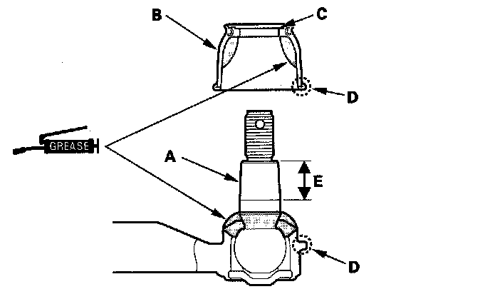
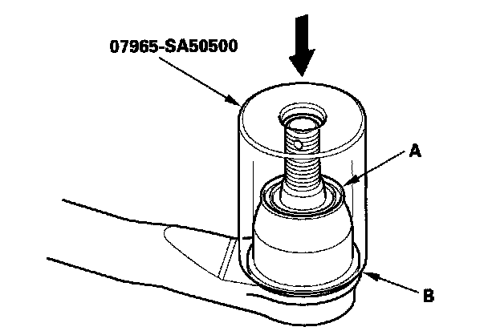

Tie Rod Boot: Service and Repair
Tie-rod Ball Joint Boot ReplacementSpecial Tools Required
Front hub dis/assembly tool 07965-SA50500
1. Disconnect the tie-rod ball joint from the knuckle.
2. Remove the tie-rod end from the rack end.
3. Remove the boot from the tie-rod end, and wipe the old grease off the ball pin.
4. Pack the lower area of the ball pin (A) with fresh multipurpose grease.

5. Pack the interior of a new boot (B) and lip (C) with fresh multipurpose grease.
Note these items when installing new grease:
^ Keep grease off the boot mounting area (D) and the tapered section (E) of the ball pin.
^ Do not allow dust, dirt, or other foreign materials to enter the boot.
6. Install a new boot (A) using the front hub dis/assembly tool. The boot must not have a gap at the boot installation sections (B). After installing the boot, check the ball pin tapered section for grease contamination, and wipe it if necessary.

7. Install the tie-rod end to the rack end.
8. Connect the tie-rod ball joint to the knuckle.
9. Check the wheel alignment, and adjust it if necessary.